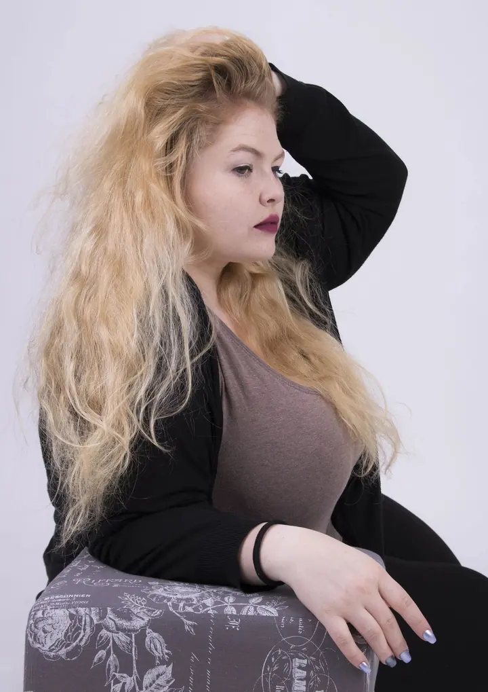
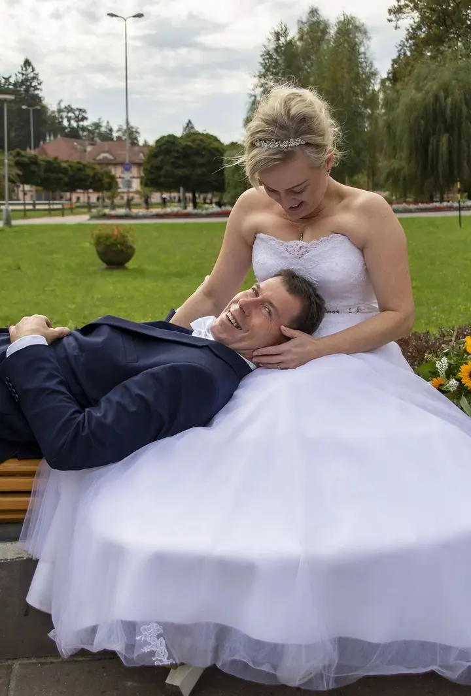
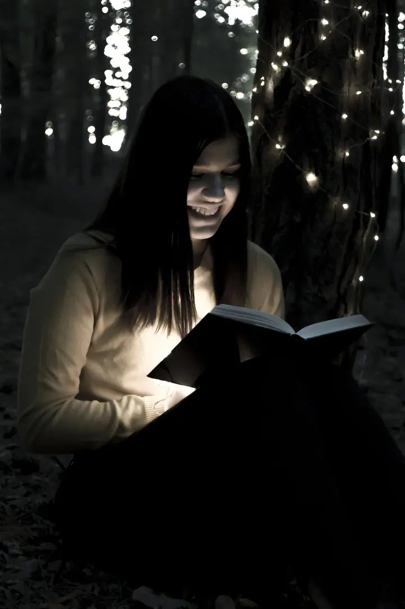
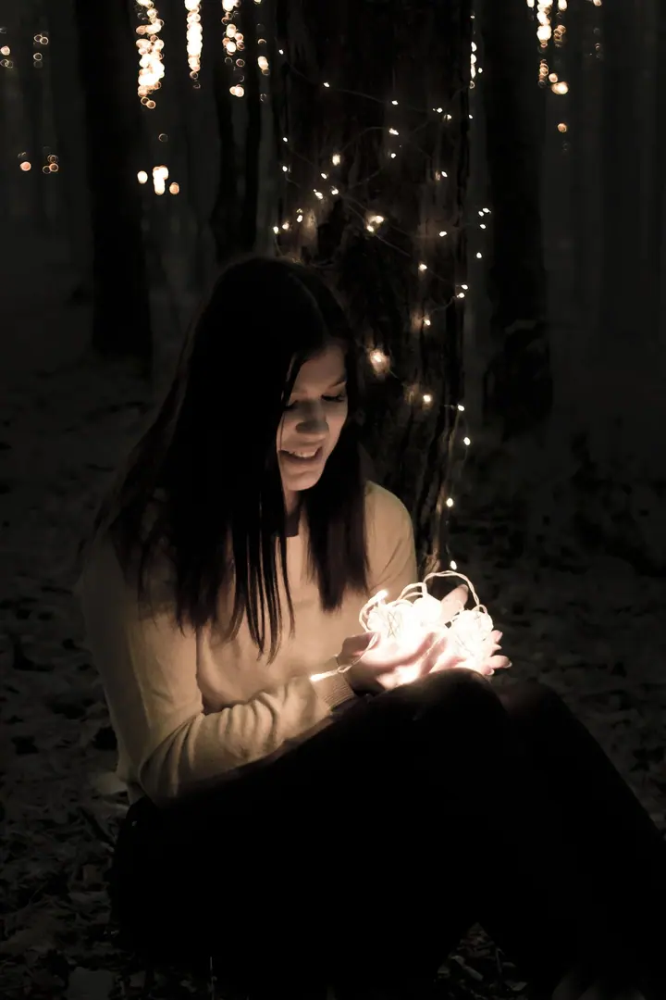
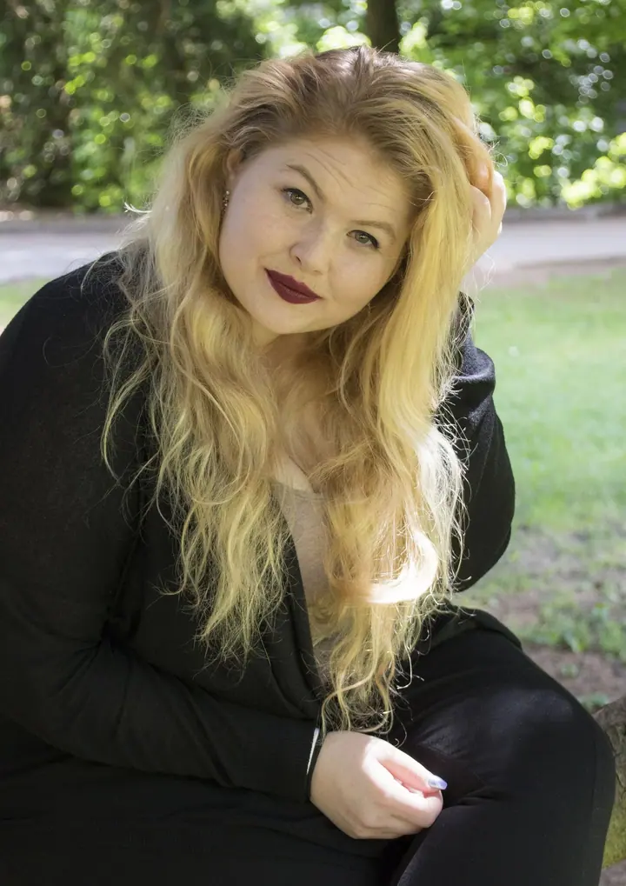
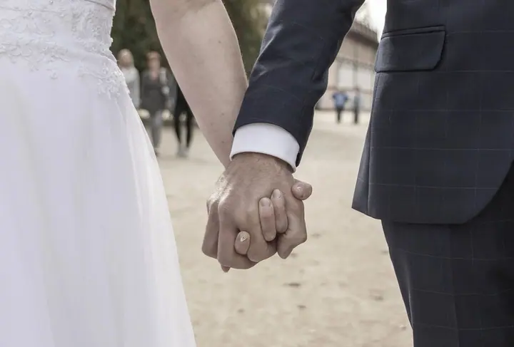

Portréty
Portrétní focení venku, kde vybíráte z upravených fotografií. Balíček Portréty trvá zhruba 30 minut a dostanete v něm 20–30 fotek, balíček Mini nabízí 10 fotek.





Jmenuji se Kristýna Valášková a pod značkou Krista Photography fotím portréty, svatby a rodiny. Nejraději fotím venku a fotky, které vám upravím, si vybíráte sami.
Více o mně
„Můj první foťák byl vyrobený z krabice od bot.“
— Kristýna Valášková
Portrétní focení venku, kde vybíráte z upravených fotografií. Balíček Portréty trvá zhruba 30 minut a dostanete v něm 20–30 fotek, balíček Mini nabízí 10 fotek.
Fotím jen obřad se společnou fotkou, obřad s portréty, nebo celý den od příprav přes obřad a portréty až po hostinu. U celodenního balíčku dostanete minimálně 600 snímků upravených ve Photoshopu.
Krátké focení pro dva, zhruba na 30 minut, ve stejném balíčku jako portréty. Vyberete si 20–30 fotografií, které vám upravím.
Rodinné focení venku trvá 45–60 minut. Dostanete 40–60 upravených digitálních fotografií, které si sami vyberete.
Můj první foťák byl vyrobený z krabice od bot. O fotografii jsem se začala zajímat už na základní škole a potom jsem vystudovala fotografickou školu.
Dnes fotím na Canon EOS 750D s objektivem Sigma 18–300 mm. Věnuji se portrétům, svatbám a rodinnému focení. Fotím v exteriéru, protože venku se lidé uvolní a fotky pak působí přirozeně.
Fotografie je pro mě velká láska a chci se jí věnovat čím dál víc. Proto mám u každého focení ráda čas na to, abychom se poznali a vy se před foťákem cítili dobře.
Napište mi přes formulář, jaké focení si představujete a kdy by se vám hodilo. Rezervace vás k ničemu nezavazuje.
Společně vybereme balíček, který vám sedí, a domluvíme se na místě venku. U celodenní svatby se platí záloha 50 % v den, kdy domluvíme termín.
Fotíme v klidu a bez spěchu, portréty zhruba 30 minut, rodiny 45–60 minut, svatbu podle zvoleného balíčku.
Z náhledů si vyberete fotografie, které vám upravím. Hotové fotky dostanete do 4–6 týdnů.
Balíček Portréty/Páry stojí 1 000 Kč, Rodina 2 000 Kč a Mini 500 Kč. Svatební balíček Obřad stojí 5 000 Kč a celý den 10 000 Kč.
Fotím v exteriéru. Místo vybereme spolu tak, aby se vám líbilo a sedělo k typu focení.
Zpracování trvá 4–6 týdnů od focení.
Ano, každá další upravená fotografie nad rámec balíčku stojí 50 Kč.